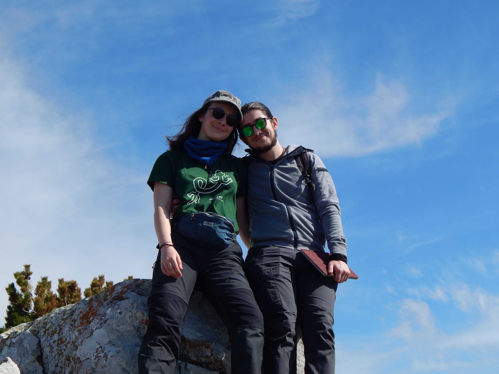

What you're seeing has been built to monitor the activity of Apoidea species
on flowering plants in high-altitude habitats. The device starts filming
everytime the camera sensor detects movement, which is made possible by a
free and open source software developed specifically for the project.
While it is on, the device also keeps track of temperature and humidity.
For further info about the software, click
here.
For the complete list of hardware's components,
here.
Why?
The monitoring activity is part of a master thesis project about trophic
competition between Apoidea species in high-altitude habitats. The Apoidea
superfamily includes honeybees, bumblebees and many more usually less known
species, which are as much as important as the others for the ecosystem.
Monitoring this group of insect pollinators is fundamental for habitat
conservation, and studying the interactions between species (competition,
in our case) is a key aspect in the work of conservationists.
The monitoring activity of Summer 2022 interests three sites in the Majella
National Park: Morrone massif, near the Diana & Tamara refuge (~1800m
s.l.m.), mount Blockhaus (~2000m s.l.m.) and Fondo di Femmina Morta
(~2200m s.l.m.). In each of the three sites, on work days, four of our
devices are deployed on field for data collection.
Who are we?

Gaia studies Conservation and Evolution at the University of Pisa
and is currently preparing her master thesis on the aforementioned topic.
Marco studies Physics at the University of L'Aquila. Apart from
academic studies, he is passionate about technology and programming.
What makes them perfect partners in crime for this project is their
love for nature, their will to protect it and the enthusiasm for field work.
P.S.
If you happen to see one of our devices, we're probably not too far, so if
you're curious about something and this page doesn't answer to all of your
questions, come and say hi, we will be glad to help!
Contacts
For suggestions, contributions, questions or anything else, write to: